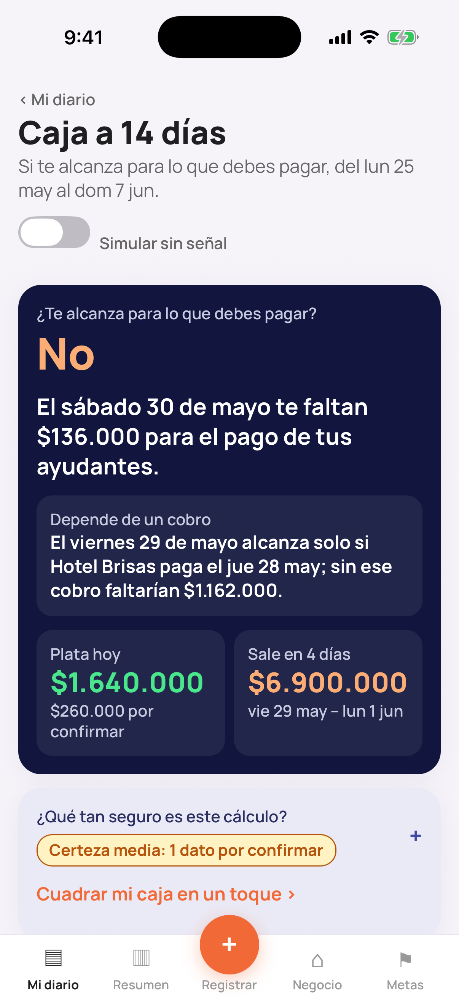
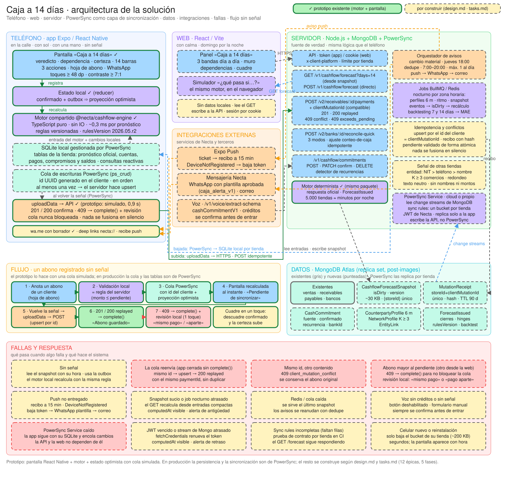
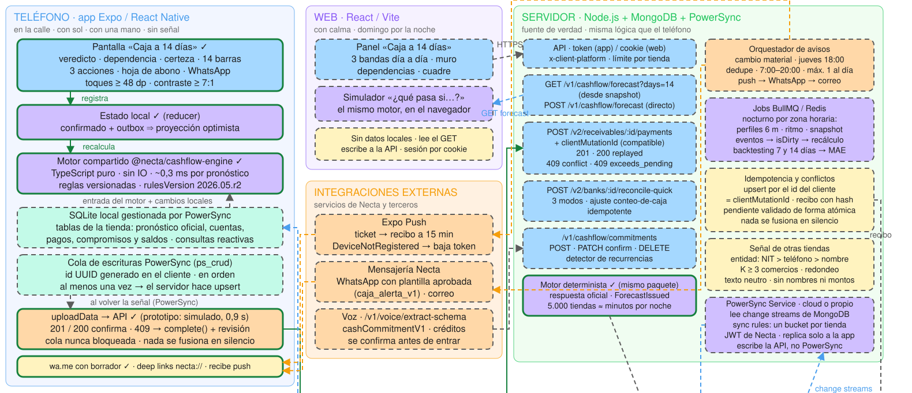
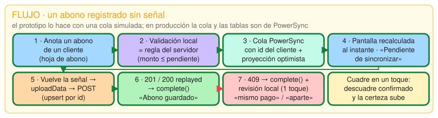
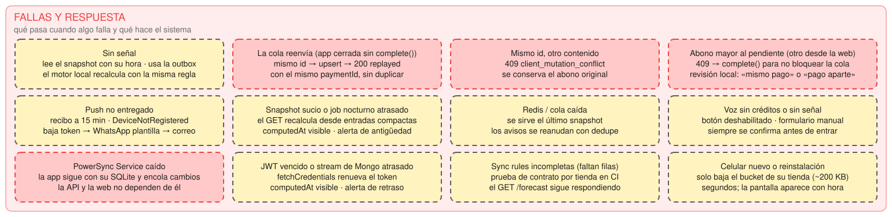
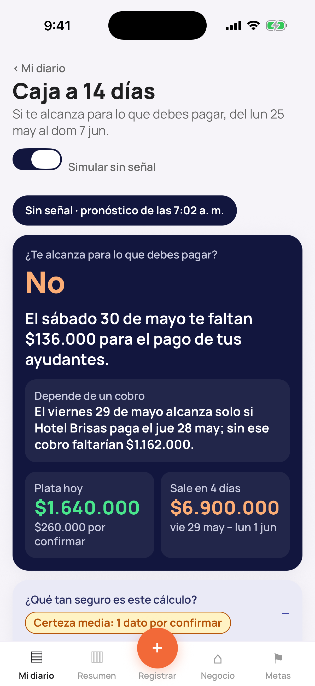
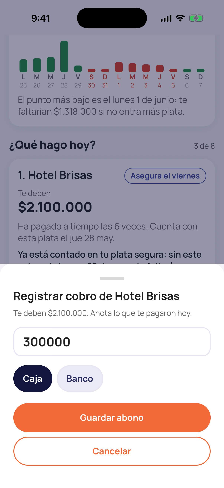
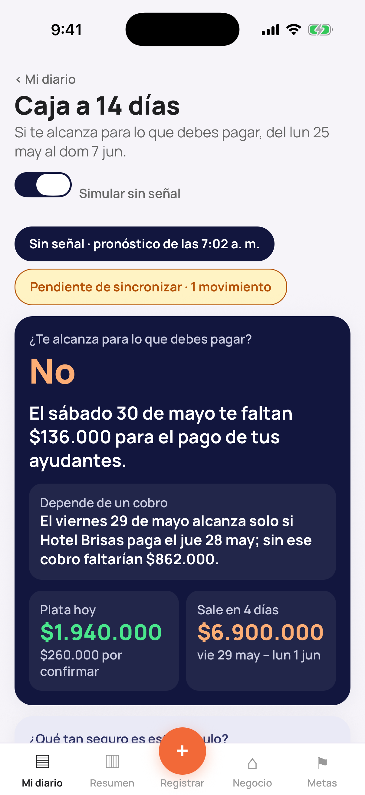
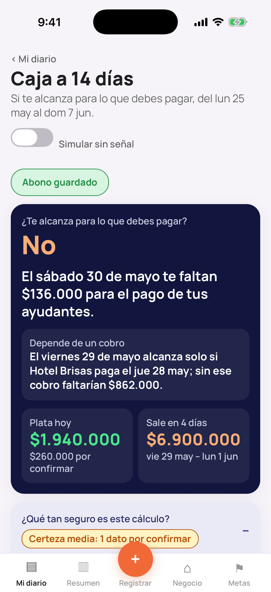

Un pronóstico de caja para que la dueña de un negocio sepa, con dos semanas de anticipación, si le alcanza la plata y qué hacer hoy.

Sumado a lo bruto
1.900.000 + 5.600.000 + ventas 3.704.000 − 4.200.000
Lo que pasa día a día
El sábado 30 faltan $136.000 para los ayudantes.
El viernes alcanza solo si Hotel Brisas paga el jueves.
Cobrarle a Hotel Brisas, a La Esquina y a Doña Fina.
La pantalla, el registro de cobros y pagos fijos, y los avisos. Recalcula aunque no haya señal.
Las tres bandas en el tiempo y un simulador de «¿qué pasa si este cliente se atrasa?». Lee la API y no guarda nada.
Pronóstico oficial ya calculado por tienda, cobros sin duplicados, trabajos nocturnos y avisos por push, WhatsApp y correo.
Si el saldo guardado y el de los movimientos no coinciden, la banda segura arranca en el menor.
Un perfil por historial da una probabilidad y una fecha distinta en cada banda.
Ventas de contado por día de la semana, con días cerrados y quincena.
Proveedores y pagos fijos, en su fecha.
Banda por banda: marca el primer hueco y el peor.
Qué cobro sostiene cada día y los 4 días seguidos con más salidas.
Un puntaje con sus razones.
Ordenadas por cuánto tapan el hueco, su probabilidad y su urgencia.
Una frase sin jerga.
| Perfil | Cuándo | ¿Plata segura? |
|---|---|---|
| Confiable | 3 ventas o más y paga a tiempo el 75 % o más | Si paga a tiempo el 80 % o más, en su fecha más tardía |
| Irregular | 3 ventas o más y paga a tiempo menos del 75 % | Solo si la probabilidad llega a 0,8 |
| Historial corto | Menos de 3 ventas | No |
| Vencida | Ya pasó su fecha | No |
Nunca se reparte un monto por probabilidad.
| Perfil | Probabilidad de cobro | Plata segura | Probable | Favorable |
|---|---|---|---|---|
| Confiable 3 ventas o más · a tiempo ≥ 75 % | Su % a tiempo (tope 0,95) | Vence + atraso típico | Vence + parte del atraso | Vence |
| Irregular 3 ventas o más · a tiempo < 75 % | Su % a tiempo + la mitad del resto, si su fecha típica cae en los 14 días | Solo si p ≥ 0,8 | Si p ≥ 0,5 | Vence |
| Historial corto menos de 3 ventas | 0,5 · con la señal de otras tiendas si hay 3 comercios o más | No | Vence + atraso | Vence |
| Vencida dentro / más de lo habitual | 0,6 / 0,25 | No | Solo dentro de lo habitual: vence + atraso típico | Hoy + 3 |
Ventas por día de la semana: la segura cuenta el 80 % y sin quincena; probable y favorable, +30 % en quincena. Marca el primer hueco y el peor. Las dependencias salen quitando cada cobro, uno a uno.
Registro parcial (1 − registro) × 0,5 · descuadre hasta 0,3 · clientes nuevos · pagos fijos sin confirmar.



De vuelta: MongoDB → PowerSync Service → base local del teléfono
Nada se fusiona en silencio

Colores y letra tomados del sistema de diseño público de Necta y de su app.




Medido en un Apple M4 Pro con Node 24. No se midió en un teléfono.
La prueba sugería 2 horas; fueron 2 h 20 min.
En las especificaciones, el cálculo y el trabajo sin señal.
Que la dueña vea con al menos una semana de anticipación si su caja va a cubrir lo que debe, y que sepa qué hacer.
Con qué anticipación vimos cada hueco real, si los avisos terminan en cobros, y calibrar las probabilidades con el backtesting.
Que pedir plazo al proveedor sea una propuesta con seguimiento dentro de Necta.
Voz y fotos de facturas: cada punto de registro sube la certeza.
Landing pages para eventos, en una empresa de marketing. Antes de la IA.
Las pedían más livianas y más rápidas.
Preguntas, dudas y mini clases de Svelte que yo dictaba, para que su curva de aprendizaje fuera menos compleja.
Una pantalla que Carmen puede leer en la calle, que le dice de qué cobro depende el viernes, funciona sin señal y no le muestra un espejismo, y un plan completo para que el equipo la construya.